Jani - Assets & Level Design, UI Programmer
Jocke - Programmer
Petteri - Generalist, Designer
Teemu - Generalist, Designer
Tomi - Generalist, Programmer
Status: Finished /Spring 2023
Total work hours: 135
Tools: Unity, Visual Studio, 3ds Max
I set out to make my first game project with a group of four friends in the spring of 2023. Due to our inexperience, we decided to make a game for which tutorials would be readily available. Our game would therefore probably have little to no original content.
We decided to make a face-paced, low-poly top-down shooter game with the meter-cube as the theme. Thus the working title for our game was coined, "Palikkapeli". Originally we planned to make it a small-scale multiplayer game with several game modes such as team deathmatch, capture the flag and extraction.
At first, tasks were broadly divided into scripting and design, the latter of which I found myself in the midst of. The first step would be to set up a fresh Unity project and get everyone on the same page with Github, our source control. This took longer than expected, but after a few weeks, I was able to focus on making assets for our game.
As winter began to loosen its grip, our own grasp for what was possible to achieve began to manifest itself in our minds. After a bumpy start with trouble in source control and compatibility issues with modelling software, we were finally able to produce a playable version of the game. Lacking many of the features we had originally intended and still being very much under development, it turned out to be a success with generally positive feedback as we had CUBIC WARS on display at two closed Beta-testing events at Junioriliiga and Gamelab Demoday in April 2023.
In a meeting we had half way through the semester, we discussed the possibility of a FPS-version of the game. A demo of this FPS version was on display at the April events. The team has indicated its willingness to continue working on the project during the summer and possibly introduce some of the features that were originally planned.
My tasks in the project included making 3d models to be used in the map, level design and UI/menu design. I also searched for suitable music and SFX to be used in the game. As there was no real team lead, and every team member was about on the same level in terms of skill and experience, everyone did a bit of everything.
For the 3d models I used 3ds Max and made different models for doors, windows and walls which could be used modularly to design different levels. During development, we decided to unwrap these models so that tiling textures could be used.
Level design was enjoyable, as it was essentially linking the 3d model prefabs together in the game engine to make rooms on a map, a bit like combining Lego pieces.
When no more time could be spent on the game map, I turned my focus on making a menu system for the game. At this point we had refined our ideas and decided that CUBIC WARS would be a Star Wars parody. The menu system's visuals had to accomplish a strong thematic connection for the player from the very first mouse click.
The scripts that I wrote for this project relied heavily on tutorial videos and searching for solutions on the internet. I was mainly involved in the scripts for elements that I also designed. These were the menu systems including main menu navigation screens, pause menu and game over screen, camera movement, and a simple teleportation script.
We were all still rather fresh to the concept of source control and had little to no experience in what it actually is or does. With five first year students working on the same project, it took practice and a few merge conflicts to establish a sustainable workflow. We used Github to manage our project.
One issue that cost my colleague and myself more than one day to figure out was an apparent compatibility issue between 3ds Max and Blender as I made the 3d models in Max and my colleague created textures and materials using Blender. It all stemmed from the default units of the two modelling softwares being set to imperial and metric by default, respectively. Ultimately, I had to make the models again.
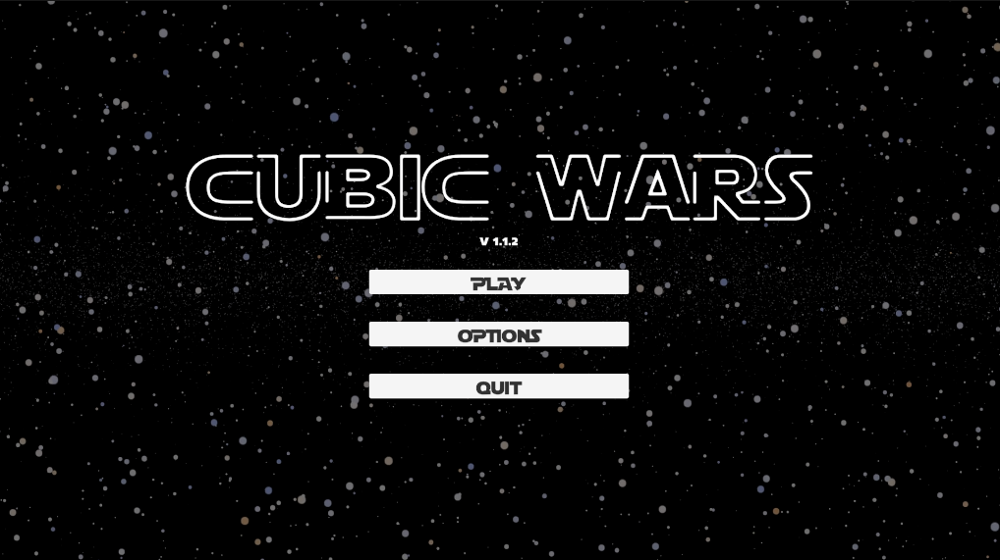
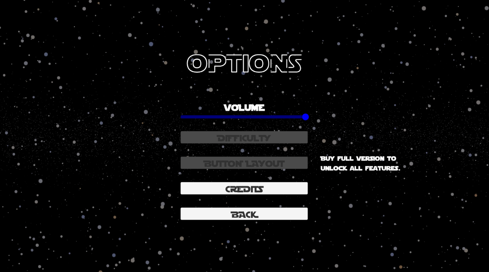
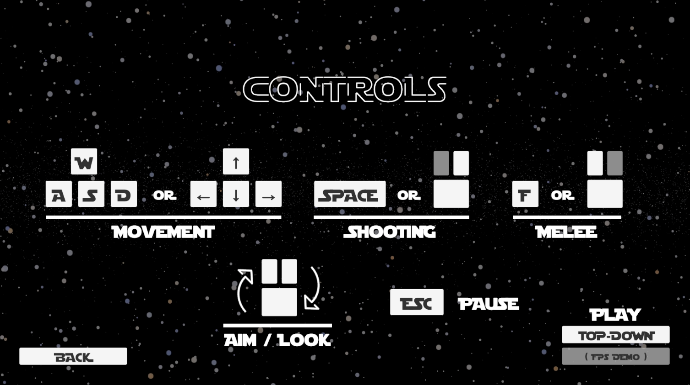
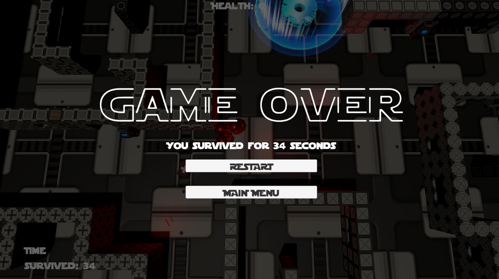
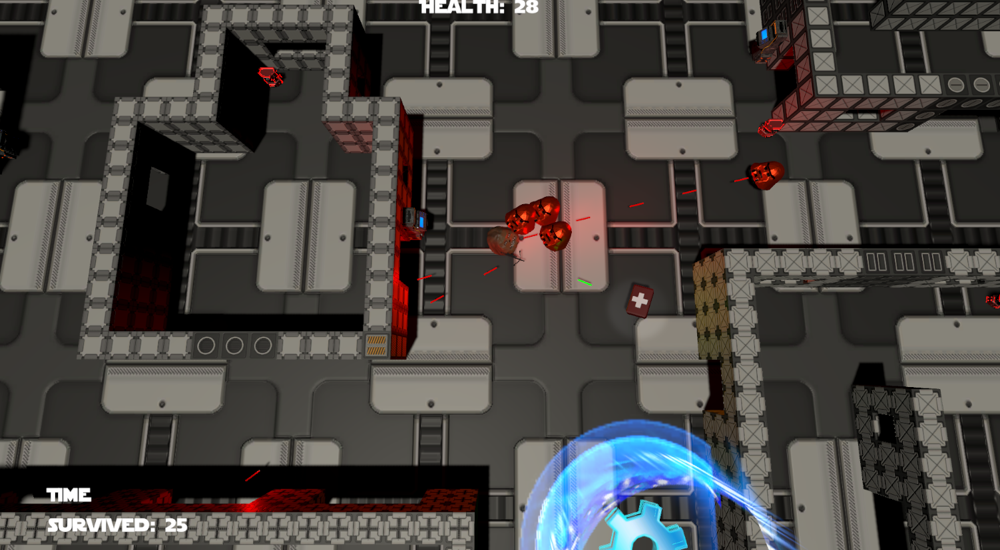
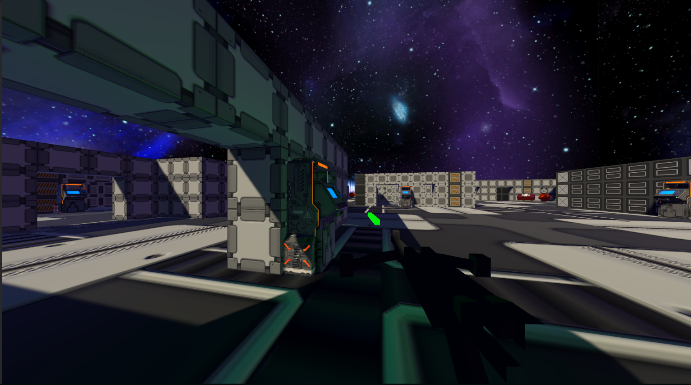
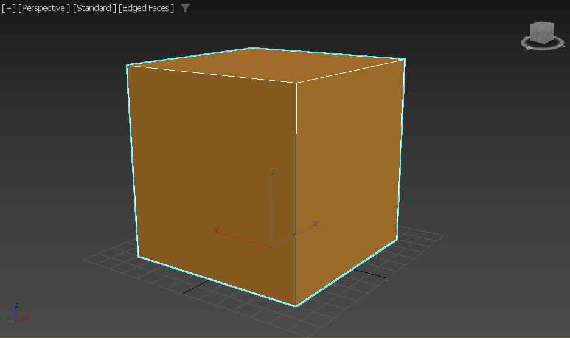
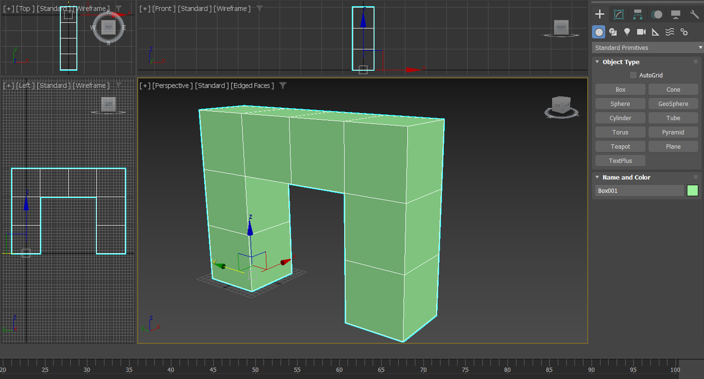
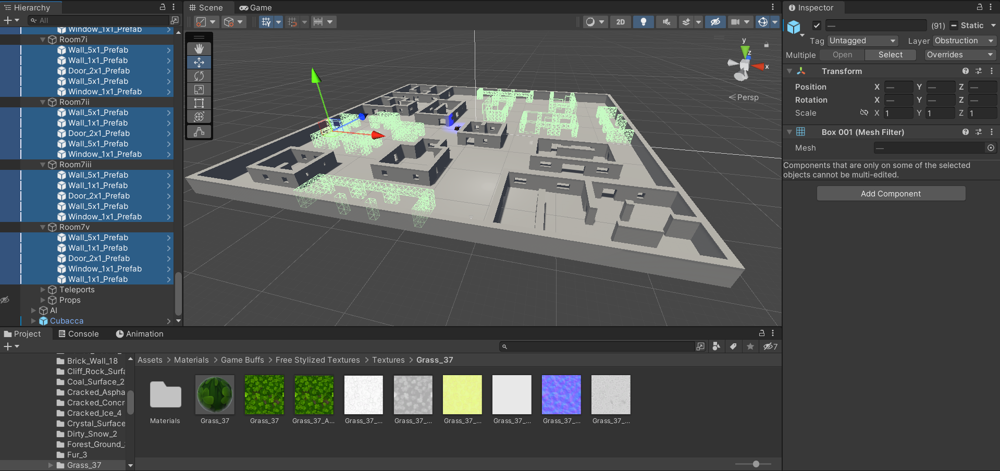
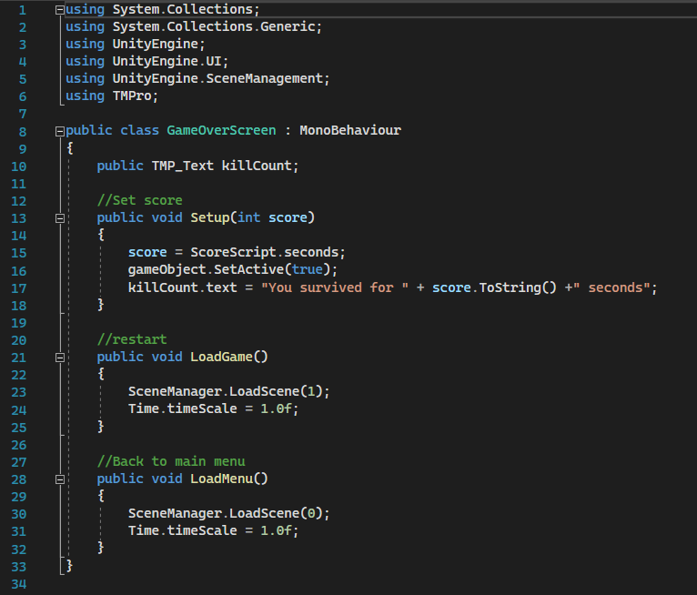
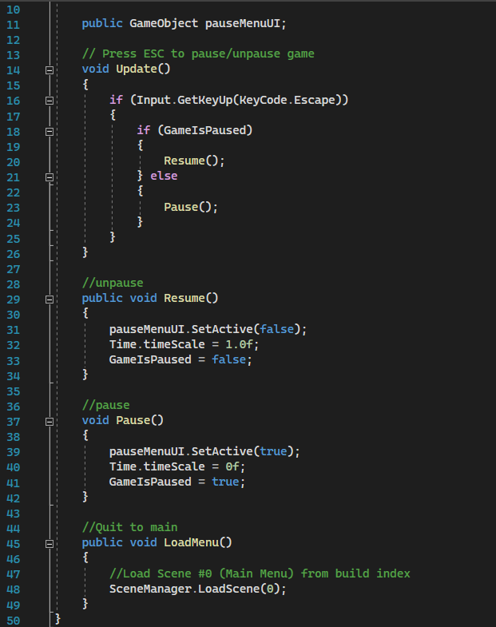